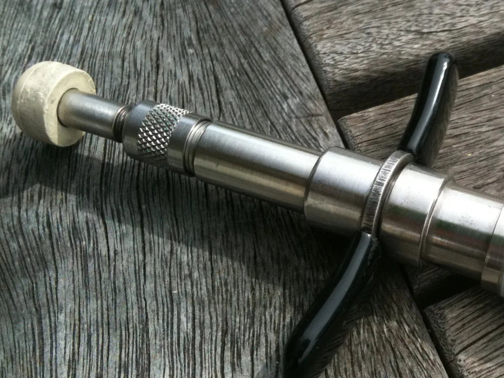

Back to techniques
Technique
Activator Method®
The primary technique for full‑spine care at At Home Chiropractic — a specialized handheld instrument, a quick, low‑force impulse, and no twisting, popping or cracking.
Technique
The primary technique for full‑spine care at At Home Chiropractic — a specialized handheld instrument, a quick, low‑force impulse, and no twisting, popping or cracking.
The Activator Method is a gentle, precise chiropractic technique that uses a specialized handheld instrument to deliver targeted adjustments throughout the spine and extremities. Unlike traditional manual adjustments, the Activator instrument provides a quick, low‑force impulse without twisting, popping, or cracking.

This neurologically focused approach is designed to improve joint motion, reduce stress on the nervous system, and support your body’s natural ability to heal and function at its best.
“For most spinal corrections, I use the Activator Method®, a precise instrument-assisted technique that delivers a controlled adjustment with remarkable accuracy.”
At Home Chiropractic uses Activator Methods® as the primary technique for full‑spine care, allowing for highly specific corrections tailored to each patient’s unique needs. The result is a comfortable, personalized approach focused on helping you move better, feel better, and enjoy long‑term spinal and nervous system health.
Because the instrument does the work, patients remain in a neutral, comfortable position while receiving care — making it an excellent option for individuals of all ages, including seniors and those who prefer a low‑force approach.
Because the adjustment is both gentle and specific, Activator care is an excellent option for:
Gentle. Precise. Effective.
A modern approach to chiropractic care designed to fit every stage of life.
Book a visit and she’ll come to you — anywhere along I‑85 between Greenville and Shelby.